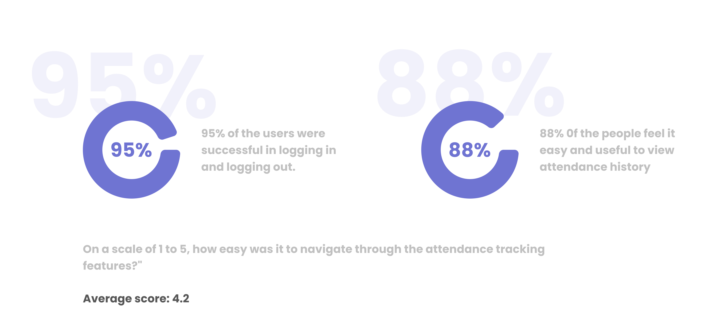

Warehouse Attendance Management
Research | UX Design | UI Design
I have actively contributed to the research phase, engaging in user interviews to gather valuable insights. I played a key role in crafting the UI design of the mobile app, thoughtfully creating components and layouts to enhance the overall user experience.
Roles and Responsibilities
- User Interview, User Research UI Design,
Project Context
- Jul 2023 - Sep 2023
- Project
Tools used
- Figma
- Google forms
- FigJam
Project Overview
A leading logistics company seeks to improve its warehouse operations by introducing a mobile app for attendance management. The goal was to enhance the user experience for warehouse delivery personnel, providing a seamless solution for attendance tracking.
Problem Statement
The traditional attendance tracking system relies on manual processes, leading to inaccuracies and delays. Communication between the organization and delivery personnel was difficult.
Research and Discovery
User Research:
Conducted interviews and surveys with warehouse delivery personnel to understand their pain points and preferences related to attendance tracking and communication.
- Conducted one-on-one interviews with participants, asking targeted questions to understand their daily workflows, pain points, and frustrations with the existing attendance management system.
- Ensured anonymity in responses to encourage honest feedback. Emphasized that the goal was to improve the system for their benefit.
- Attendance Tracking: How do they currently log in and log out? What challenges do they face in this process?
- Communication: How do they receive information and updates from the organization? What improvements would they suggest?
Competitive Analysis:
Researched existing solutions in the logistics industry to identify best practices and potential areas for improvement.
- Analyzed interview transcripts and survey responses to identify common patterns and recurring themes in the feedback.
- Prioritized issues and pain points based on the frequency and intensity of feedback, focusing on the most critical aspects that needed improvement.
- Created user personas based on the gathered insights, detailing the characteristics, behaviors, and preferences of different types of warehouse delivery personnel.
Design Goals
Objectives:
- Streamline attendance tracking for delivery personnel.
- Updates and notification features in the app.
- Create an intuitive and user-friendly interface.
Design Process
Wireframing:
Developed wireframes that emphasized simplicity and efficiency in the user journey, ensuring easy navigation and clear information presentation.
Visual Design:
Designed a clean and intuitive interface, incorporating a warehouse-themed color palette and iconography. Prioritized clarity and readability for quick interaction.
Prototyping
Created interactive prototypes to visualize the user flow and test the functionality of attendance tracking and communication features.
- Implemented a user-friendly authentication process that ensures secure verification.
- An easy-to-use password reset feature, ensuring a seamless experience for users who need to reset their passwords.
- Enabled users to conveniently view and stay updated with the latest notifications directly from the home screen.
- Included a dedicated profile section where users can effortlessly access and review all their details and settings.
- Implement automatic location detection to facilitate attendance specifically in a designated location."
- Attendance management with effortless one-click log-in and log-out directly from the home screen.
- Implement a user-friendly calendar view for effortless access to comprehensive attendance records.
- Implement automatic location detection to facilitate attendance specifically in a designated location."
- Attendance management with effortless one-click log-in and log-out directly from the home screen.
- Implement a user-friendly calendar view for effortless access to comprehensive attendance records.
User testing
Conducted usability testing sessions with warehouse personnel to gather feedback on the prototype's usability, navigation, and overall user experience.
-
On a scale of 1 to 5, how easy was it to navigate through the
attendance tracking features?"
Average score: 4.2

Conclusion
Project Outcomes:
The Warehouse Attendance Management App design addressed the challenges posed by manual attendance tracking. The new interface streamlined processes, resulting in improved efficiency and accuracy.
Lessons Learned:
Acknowledged the importance of user feedback in refining the design and the need for ongoing collaboration between design and development teams.
Next Steps
Feedback and Iteration:
Emphasized the need for continuous feedback loops to address any issues that may arise post-implementation and potential iterations for future improvements.